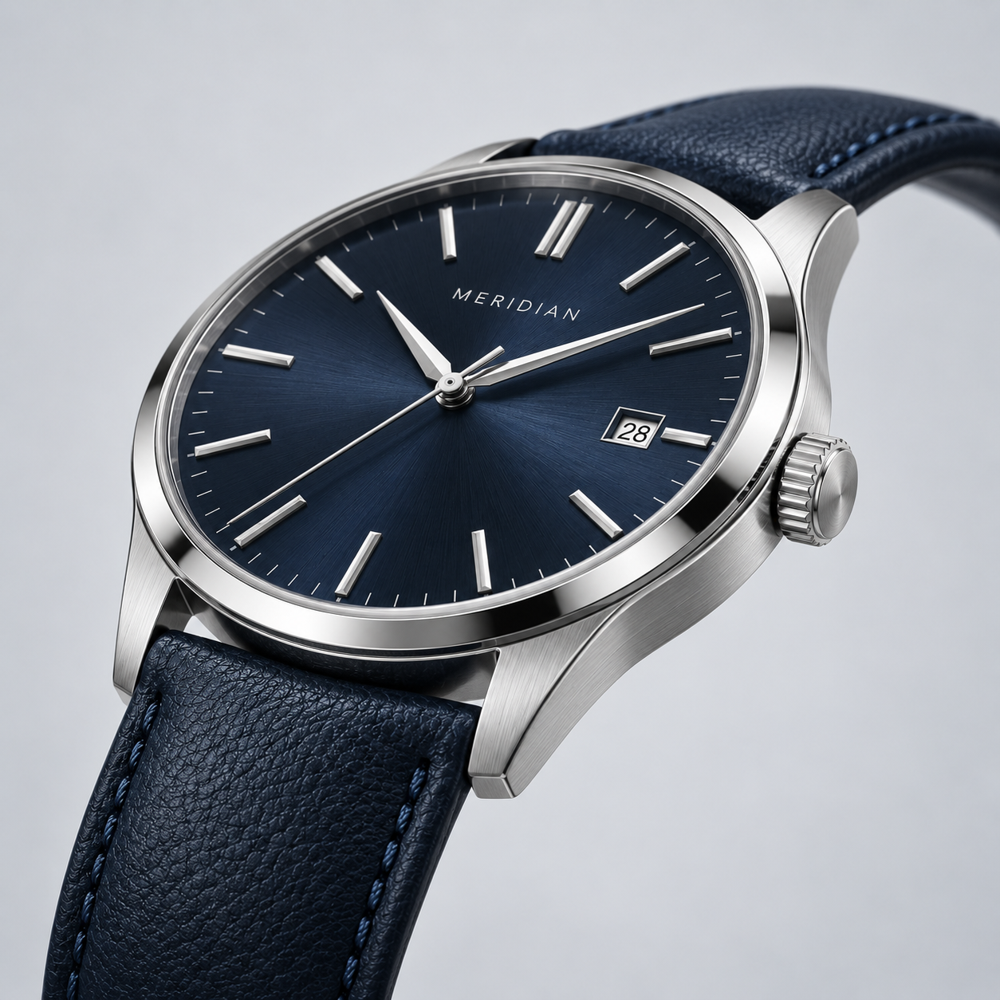
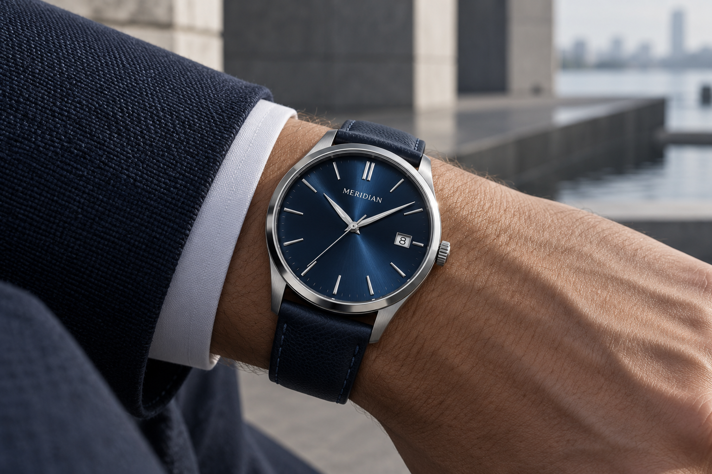

01 / PROPORTION
恰到好處的比例
錶殼、錶耳、指針與刻度，各自安放在適合的位置。我們讓設計保有留白，也讓閱讀時間這件事變得直接。
OUR PHILOSOPHY / 品牌故事
MERIDIAN，意為子午線。一條看不見的線，讓我們找到自己的座標。我們以此為名，思考腕錶與人的關係：精密，但不複雜；有自己的個性，也能自然融入每一天。

THE MERIDIAN APPROACH

錶殼、錶耳、指針與刻度，各自安放在適合的位置。我們讓設計保有留白，也讓閱讀時間這件事變得直接。

透背設計讓精密構件不只是藏在錶殼裡的秘密。上鍊、轉動、行走，每一次互動都是佩戴的樂趣。
從安靜的早晨到晚餐後的散步，腕錶不必只出現在重要場合。它記錄的，是你正在經歷的生活。
FIND YOUR MERIDIAN